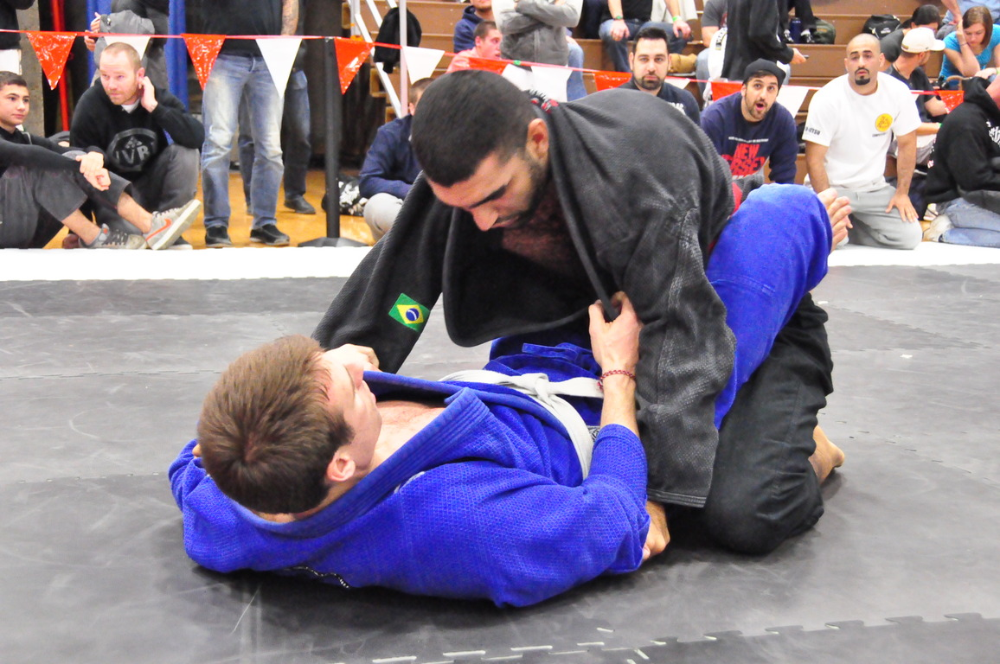

Co dělat
- Držet rovná záda, lokty uvnitř a hlavu nad pánví.
- Rozbíjet gripy dřív, než začne otevírání guardu.
- Po otevření guardu hned přecházet na bezpečný pass.
BJJ POSITION
Spodní pozice, ve které řídíš tempo přes gripy, úhel a narušení postoje soupeře.

V Closed Guard držíš soupeře mezi boky a nohama. Nejdřív lámej posture, pak útoč.